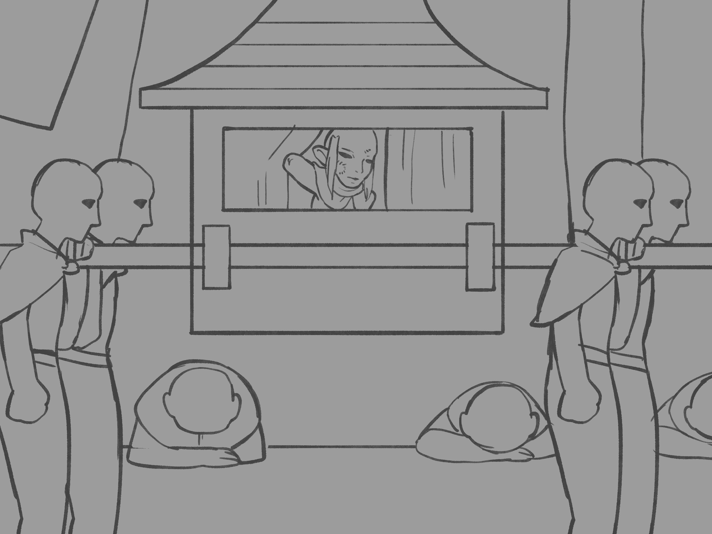

Chapter 2: The Council of Spirit
Seats of the Eclipse

Seats of the Eclipse
15051.10.17
站在天使人雕像前，Ubbo 感到莫名的熟悉，卻又理不清到底是怎麼回事。他看見雕像兩側的培養箱，以及穿梭在這個空間內，穿著白袍的研究員們，和他們牽著的其他電漿人們。那些電漿人，長得和他一模一樣。
Ubbo 走向其中一名研究人員，詢問他為何牽著的電漿人赤身裸體的，沒有穿衣服？研究員回應「實驗體不需要穿衣服」，Ubbo 只好試著與後面的電漿人對話，但那名電漿人的反應卻十分遲鈍。Ubbo 發現無法順利溝通，決定搗亂一番。他將離自己最接近的兩個培養箱打破，裡頭的培養液流了出來，懸浮在裡頭的電漿人也隨之流出，但他們看起來有氣無力的。Ubbo 似乎聽見他們低聲呢喃著一個字：「Ba’thal-Usou」。
研究員們趕緊呼叫衛兵，兩名衛兵前來把 Ubbo 牽制著，並將他拖到其中一間手術室，嘗試將他固定在椅子上，便準備離開。但 Ubbo 反手將一名衛兵抓住，往手術室內扔去，另一名衛兵則倉皇逃走。趁著被摔到手術室內的衛兵重傷倒地，Ubbo 離開了手術室，並將門關了起來。
Ubbo 回到雕像前，他發現自己剛才的舉動除了引來衛兵外，根本沒什麼效用，這裡的人們像是所有事情都與他們無關一樣，根本不在意他的搗亂。於是他決定來場更大的。
Ubbo 看著那座無心天使人的雕像，爬了上去，並停留在雕像的肩膀上。Ubbo 拿出武器，試圖從天使人的臉上敲下些碎屑，周圍的各個研究員、衛兵以及逃竄出來的電漿人都圍了過來。他聽見底下傳來類似「Ba’thal-Usou」的語句。接著，他嘗試將他的手伸進天使人敞開的胸腔內，將手變形，充滿整個胸腔。這樣，就不再是「無心」了吧。
看見研究人員、衛兵和電漿人一一跪在地上，呢喃著「Ba’thal-Usou」，Ubbo 神氣的爬了下來，慢慢的走出工廠。途中，他試圖拉了拉他迷失的手足們，想將他們從工廠拯救出來，但他們遲鈍的模樣，讓他也清楚，這些「失敗品」也許就該被留在工廠內了吧。
Ubbo 的腦中想起一些破碎的片段：那名天使人，似乎曾經看著他，對他說過 Ba’thal-Usou……
在工廠外等待的 Lott 和 Psyber 試圖和衛兵溝通，讓他們能進去工廠，但完全沒有用。於是在兩人的討論下，他們決定先去附近繞繞，畢竟也不知道要等 Ubbo 多久。
走到附近較為熱鬧的街道上，腳步依然沈重，甚至，對 Lott 來說，這股沉重感已經重到他快走不動了，於是他在路邊停了下來，躺了下來。這時，Psyber 與 Lott 同時感到一股比之前被強迫下跪還要強烈的重力感，卻沒有聽見鐘聲。Psyber 看見附近所有的人們都跪了下來，甚至上半身趴在地上，他便趕緊下跪。不遠處，Psyber 看見有個拉上簾子的轎子，快要十個人扛著。轎子裡的人想必是高等的人，也許是議員也說不定。眼看轎子離他們越來越接近，Psyber 趕緊將 Lott 翻身，變成趴在地上，他自己也趴在了地上，不敢抬頭。
轎子的陰影停在他們身邊，Psyber 似乎聽見了簾子被拉開了聲音。幾秒鐘後，簾子被拉起，轎子又繼續往前了。直到轎子的陰影不再籠罩他們，Psyber 才抬起頭，並將 Lott 翻了回來。他看見轎子朝著與他們目的地，靈魂議會，相同的方向前進。
Psyber 陪著 Lott 在路邊再休息了一會兒，接著兩人決定先回工廠前確認 Ubbo 的狀況。同一時間，一名頭上罩著兜帽的陌生人決定默默跟著他們走。
回到工廠前，Ubbo 正好推開門，與夥伴們重逢。Psyber 與 Lott 和 Ubbo 分享情報，也知曉了「Ba’thal-Usou」這個他們還不明白的詞彙。他們決定繼續朝著靈魂議會的方向前進。躲在不遠處的陌生人決定繼續跟蹤他們。
朝著靈魂議會的方向前進，陌生人眼看 Ubbo 等人就快踏入衰竭域，便趕緊加快腳步追上他們。陌生人趕了上來，按住了 Ubbo 的肩膀，Ubbo 掏出武器，警戒的訊問他，Psyber 也掏出武器與他對峙。陌生人向他們說明，再繼續往前就要脫離不動域，進入衰竭域，他們的呼吸會變得很困難，必須要有心理準備。
接著，陌生人率先走過兩域的交界，氣管的緊縮來得突然，但他早已有心理準備了。他回頭看向 Ubbo 等人，他們一一小心地踏了過來。雖然已經有陌生人的警告，這股呼吸困難的不適感，還是十分噁心。他們也因此暫時信了這名陌生人。
陌生人自我介紹名為 Buzz，他很顯然的是一名妖精，而在白袍底下藏著他穿在身上的重甲。Ubbo、Lott 和 Psyber 紛紛以自己在 Fenadra 的化名介紹給 Buzz。Buzz 表明自己也是從地面上來的，在地底下還沒有待得久到身體變形，但也已經久到各個區域都走過一遍了，除了靈魂議會外。他不確定他該不該走進那裡去。聽聞 Ubbo 等人的來意，他決定暫時當個嚮導，帶他們往靈魂議會去。
往東北方走了好一陣子，眼前，是一片綿延的柵欄。不過，人民們似乎也很自在的打開柵欄的門，走出或走入眼前的荒地。遠方是一座高塔，除此之外，荒地什麼都沒有，連植物也沒有。
Ubbo 率先將門推開，踏入了荒地，其他人則一一跟上。他看了看地上的土，抓了一把，吃起來和在溫室吃的土沒什麼兩樣。其他人雖然看了覺得無法理解，卻也發現肚子餓了，便拿出自備的乾糧進食，就地野餐。稍作休息後，大夥兒繼續往高塔前進。
高塔有六個邊，每個邊各有一扇門，而每個門上各有不同的符號。Ubbo 找了上面有心型符號的那扇門，嘗試打開，卻發現打不開。他們也發現人民們似乎都很清楚知道該走哪一扇門，因此他們推論，每個區的居民都會選擇
於是他們決定嘗試打開有四肢圖形的門。順利進入塔內，正前方有個聳立的圓柱，左右側則各有一個房間，但只有右側的房間有門，上面畫了個四肢的圖形。Ubbo 嘗試繞到左側，心型符號門進入的位置，發現有標新型符號的房間一樣打不開門，於是只好進入標有四肢的房間。
門打開，裡面是一個辦公室。辦公桌後，坐著一名地侏，而他的雙手都整整齊齊地被切除。「Ubbo，你終於來了。」那名地侏說道。「歡迎，我是不動席 Leigh Zahann。先讓你知道，我是支持你的。喔對，或者，我應該要稱呼你為 Ba’thal-Usou？」
不動席向 Ubbo 等人說明關於爭取空心席一事，表示現在議會內有中意的不同人選，而有一定的席次支持 Ubbo。對於這個席次的空缺，他們預計明天會在會議中得到最終的決議，並會告知人選們爭取的方法。Ubbo 並不清楚可能會有什麼爭取的方法，但他對爭取這個席次挺有興趣的。不動席提議帶他去見見其他議員。
不動席的座椅突然移動，冒險者們看見他的座椅底下跪著四個魁儡般無神的人，四隻趴在地上爬行，以駝獸之姿扛著尊貴的不動席。不動席領著冒險者們走向了右邊的房間。
推開房門，一樣在辦公桌後，一名鼻吻部十分怪異的牛頭怪正振筆疾書著。不動席向冒險者們介紹他是衰竭席。衰竭席看向詢問他該如何證明自己適合空心席的 Ubbo，同時從他變異鼻吻部發出沉重的呼吸聲。「證明給我看吧。」他說道。
Ubbo 感到呼吸變得十分困難，甚至比他們經過衰竭域的時候還要更嚴重。同時，Psyber 和 Lott 的狀況更糟，他們臉色發青，已經暈過去了。狀況不嚴重的 Buzz 和 Psyber 聯手將夥伴們扛出辦公室外，確保他們不繼續處在這嚴苛的環境內。Ubbo 走回辦公室內，衰竭席則質問他「你對抗我一人撐得住，但保護不了你的夥伴。如果今天是更多的議員與你對抗，你有抵抗得住的能耐嗎？」不動席表明他要和衰竭席在辦公室內聊一會兒，建議 Ubbo 再去其他辦公室逛逛。
辦公室外，Psyber 的狀況稍微穩定些，但 Lott 的狀況十分不好，甚至有更嚴重的趨勢。Buzz 和 Ubbo 聯手花了些時間讓 Lott 暫時脫離危險，接著他們一起將 Lott 扛往旁邊的房間，虛弱的 Psyber 則自己慢慢走過去。
Ubbo 與 Buzz 一起推開標有眼睛的門。門內一片漆黑，就連平常能在黑夜中稍微看見景象的他們，什麼也看不見。Buzz 待在門邊，同時確保 Lott 和 Psyber 的狀況，Ubbo 則踏入了辦公室內。突然間，他看見眼前飄過了疑似幽靈般的東西。追著這個幻影，Ubbo 回頭看見 Buzz 守住的門被關上了，一回頭，辦公室光線充足，坐在辦公桌前的，是 Buzz。Ubbo 感到困惑，向前走向坐在辦公桌的 Buzz，質問他這是怎麼回事。突然間，Buzz 的雙眼流下鮮血，兩顆眼珠不對稱的從臉上滑下，掉落在桌上。Ubbo 有些慌亂，但更多的是困惑。他回頭，往外走，在辦公室外看見好端端的 Buzz，而 Buzz 並不清楚 Ubbo 口中怎麼會說著什麼他眼睛被挖出來之類的事。
Ubbo 推開標有耳朵的門，裡面十分昏暗。他聽見了一個聲音，呼喊著他的名字，他便回應了那聲音。各種不同的聲音從不同方向，以不同音高、語調、聲響在他耳邊環繞著。「噢，我知道你最喜歡聽見什麼了。」其中一個聲音說道。「Ba’thal-Usou、Ba’thal-Usou、Ba’thal-Usou！」那是在工廠裡研究人員、衛兵與其他電漿人呼喊著的聲音。
Ubbo 退出了這個辦公室。Lott 還沒醒來，而 Psyber 看起來狀況好多了。但 Ubbo 知道，要爭取這個心空席的位子，似乎有很大的挑戰。現在他還不知道到底有什麼實際的挑戰，但各個議會的成員，似乎都在對他下馬威。